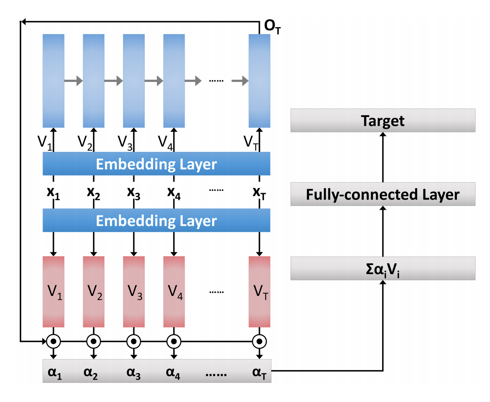

Advanced Model Attempt I (Continued)
We present an advanced model that builds upon our strawman models.
Data Collection
We've continued with the data collection scheme described in our previous update, more than doubling the size of our corpus over the last week. The additional data has yielded a slight (~1-2%) improvement in the accuracy of the word-level LSTM.
For our next advanced model, we plan to look into:
- Normalization: experiment with some of the normalization techniques described in Supranovich & Patsepnia.
- Filtering: examine our corpus and look for ways to produce a cleaner separation of data between the various emotions.
Classifier
We've implemented an attention mechanism for our word-level LSTM, modeled after the approach in Shen and Lee. Implementing this kind of attention in TensorFlow turned out to be more of a headache than we imagined, due to the dynamically-sized nature of an LSTM's inputs and intermediate tensors. In addition, we encountered driver issues on Azure that prevented GPU usage for a few days. So, progress on this front has been slower than we would like, but now it will continue full-steam ahead now that the worst parts are over.
Shen and Lee use an attention mechanism that takes just the final state of a forward-LSTM and uses this to calculate cosine similarity with input word embeddings.
Right now, we are following this exactly, and using a sigmoid normalizer to smooth the attention among the input sequence. This model is able to achieve 60% validation accuracy, which is similar to the non-attentive LSTM.
We'd like to do more experimentation and error analysis and comparing different techniques of attention. In particular, it would be interesting to see how this attention model can be tweaked, and how it compares to a simple linear model over averaged word embeddings.
Since we have a bidirectional LSTM, we have some interesting options available that we will explore:
- Take an element-wise product or sum of the forward and backward final states
- Concatenate the forward and backward states, then add a fully-connected layer to project them to the same size as the word embeddings
Text to Speech
We've continued the development of our adversarial speech/style style transfer model for emotional text-to-speech, this time focusing on the core autoencoder (rather than then adversarial loss).
The plan for this model is to decompose input speech into time and frequency components, along with corresponding encoders for each, as well as a single decoder which combines these encodings back into the original speech signal.
We've started with a simple convolutional architecture, using pooling and strided convolutions to downsample along the time and frequency axes. The model encodes the input signal as a stack of filters for each time step, and the sample signal as a stack of filters for each frequency band. The number of filters is not sufficient to reconstruct the original image, in order to induce the model to develop a useful internal representation.
The primary failure mode of this architecture is to learn how to factorize the input spectrogram, without capturing any of its visual characteristics. For example, this result from our early model:

The intended approaches to tackling this problem are as follows:
- Train on disjoint signal/style pairs: rather than providing the autoencoder with identical inputs for the content and style during training, we intend to select disjoint samples from the same speaker. This should make factorization much less effective.
- Adversarial loss: although ensuring convergence in GANs is difficult (as identified in the previous blog post), they offer a promising way to ensure that the autoencoder generates plausible samples (rather than an average of plausible samples) for this ultimately underspecified problem.
- Variational constraints: we hope to apply variational-autoencoder constraints on the hidden represententation (forcing it to be unit mean and variance) in order to further discourage factorization.